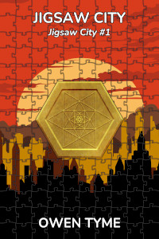

Tymely News
Friday Feature #2: Jigsaw City
Jigsaw City is a tale of a young woman fighting to retain her sanity as an ancient, magical city slowly takes over her mind and body, because she accidentally duplicated some of its magic into her mind. This novel will provide lots of action, magic, a fun space-battle, a huge aerial battle and a ton of the main character showing off what she can do with a pair of short swords. There's also a tiny hint of romance (basically, just some kissing scenes).
Oh, and by the way, the Ebook is free!
If you read this novel, please write a review. Amazon, Barnes and Noble and Goodreads are decent places to do so. You can also leave a review on Royal Road
Just a Normal Girl, or is She?
Nicole Jacobs is one of my personal favorite characters. She's the daughter of the main character from The Wizard's Scion, a young woman whose life has finally ceased to be dictated by others. She's to the point at which both her adoptive and biological parents have left her to decide for herself and despite the fact she's living in a far-flung future, with endless opportunities to study any subject she desires, both magical and mundane, she has no idea what she wants.
Between novels, she spent a year studying dragons, until she became the foremost expert on them, but that was just the means to put off the real and very basic decision about what to do with her life. It isn't properly explored until later novels, but it was also the means to stuff her feelings about the loss of her birth father, rather than actually facing them.
I enjoy that empty slate feeling and the uncertainty that goes with it, because it makes her relatable, since most everyone goes through something of the like during their early adult life.
I love the endless capability of this woman, because she dances ballet, sings, performs on stage, she's a top-notch swordswoman and she's one of the best users of magic her home world has ever produced. Oh, and she graduated high school with a degree in chemistry.
Setting her significant skills aside, she's also a half-troll with a unique talent for deep analysis of any spell she comes into contact with, because she can easily copy any form of magic, an ability she was born with. As an infant, she copied both her mother's innate regeneration and troll song powers. Next, she was held by a dwarf nurse and copied their anti-magic power, then she was handed off to her adoptive mother, copying the powers of a strong witch and necromancer.
She really could have set her mind to most anything, but nothing really appealed, aside from dragons, which was an area for research, not really a vocation, unless she wanted to take up dragon-slaying, which she did not (she loves them too much).
Knowing her love of dragons and the one last hole in her research, at her birthday party, her birth father's familiar gives her a dragon's egg, the hatching of which is covered in chapter one.
However, that's not the only gift she got for her birthday and a rather eccentric wizard sent her a small, hexagonal, brass coin, which is laden with heavy magic. In a foolish attempt to analyze it, she made direct skin-to-metal contact without a glove and copied the base spells of its enchantment into her mind.
That's the true beginning of the plot, right there, because she begins dreaming about the coin while she naps during the process of hatching the egg. She has no idea, but she's become an integral part of something grand beyond anything she could have imagined: the ancient, magical City of Kurg, built by the Ulkun, the stone men that inhabited her world first, millions of years earlier.
However, there are unforeseen consequences: the magic of Kurg is nigh unstoppable, because it's fractal in nature, storing a complete pattern of itself at multiple levels within each coin and every copy is capable of restoring the others when damaged.
It isn't long before she realizes her mistake and seeks the stone men, in search of a cure, but along the way, she learns to manipulate the coin, to magically unfold it into a building, via built-in space-warping magic. She first uses it as a handy way to carry around a portable home, without fully understanding it.
She goes on to get in all sorts of trouble and is directed by the stone men to search for the Architect of Kurg, who was sealed inside a folded piece of the city, three-million years earlier. Quite naturally, he's totally mad and ends up as Nicole's primary competitor in the race to collect Kurg pieces. After all, most good protagonists need a good villain...
The Inspiration
This inspiration behind this one is a little different, because it started with a conversation between myself and a friend about Dungeons and Dragons magic items, specifically a portable campsite. After some discussion, we decided there was potential to explore the concept further and I ended up running a GURPS game for him based on that idea, from which the concept of Kurg was born. Like the Kurg pieces, themselves, it started as a small idea that's only grown in size, since then.
Later on, as I transitioned toward focusing my creative energies on writing, rather than GMing, I decided it would make an excellent McGuffin for a collection-oriented series and I had Nicole Jacobs more or less just lying about, waiting for something to strike her fancy. The combination was a wonderful match.
The Plan
Jigsaw City is now the centerpiece of my plans for the conclusion of the over-arcing setting that also encompasses Ashen Blades, Sky Children, The Wizard's Scion and, oddly enough, The Book of Newts, despite the fact it takes place in a parallel universe. Nonetheless, these series are more deeply connected than they appear to be and characters are sometimes referenced in the others.
For example, the war between the Unseelie and Seelie fey that becomes important later in this series forms the backbone of Ashen Blades, because the Unseelie fell further and became demons. Another example is the appearance of The Book of Newts (the talking, magic book) in Jigsaw City, though I've not quite gotten to explaining its presence and how it got to the Milky Way.
I don't want to toss out too many spoilers here, but if you're patient, you'll see the biggest plot I dare write when I get all of my ducks in a row, for the series-crossing event that The Great Purpose will be, which will probably be volume eight (or maybe nine) of this series, which currently goes as far as four.
I really look forward to Nicole meeting The Hunter (A.K.A. Artemis Watson, Little Miss Secret, LMS, brat, etc.), from Ashen Blades, because the two of them will not get along and who doesn't like to see two protagonists beat the living snot out of each other? That will mostly be because neither one is very good at bending to the whims of others.
Interested? Here's Where You Find the Book!
Oh, and once again, I thought I should point out the fact the Ebook is free, though you won't find it on Amazon, due to exclusivity requirements, but you can still pick up print copies there.

Nicole Jacobs is twenty years old and unsure what direction to take in life, because the opportunities available to her are too numerous and no one job fits all of her talents, but she passes the time doing research on dragons. To that end, she hatches a dragon egg, but in the midst of the harrowing work required, she dreams of the ancient, magical City of Kurg, which yearns to be whole.She soon discovers, based on a chance encounter with a small magic item she'd been analyzing, that her mind has been dangerously intertwined with that of the city, which spreads through her brain like a disease, slowly taking over. At first, she's able to keep it under control by suppressing magic within her own head, but over time, it begins breaking past the road blocks she desperately erects in its path as it inches toward total control.
Seeking a cure, she's forced to research the ancient city, while the clock ticks down on her sanity and ultimately, her life. Meeting the strange, stone men that made the city, the Ulkun, she finds they have few answers for her, but suggest that if she locates the Architect of Kurg, one of their own kind, he might be of some help. Unfortunately, due to the fact he was trapped inside a small segment of the sealed city for millions of years, alone, he's quite insane, unhelpful and worse, eventually becomes hostile, forming a plan for galactic domination.
Instead, Nicole seeks the Life Giver, the mysterious being that created the Ulkun and ordered the construction of Kurg, while collecting pieces of the city, in the hopes of attracting their attention.
Will Nicole find a cure, freeing herself from the clutches of Kurg, or will she lose control of her own mind, taken over by the magic city? Will the Architect succeed at replacing everyone in the galaxy with obedient, magically-animated drones with no will of their own or will Nicole stop him?
Tags: friday-feature, novel